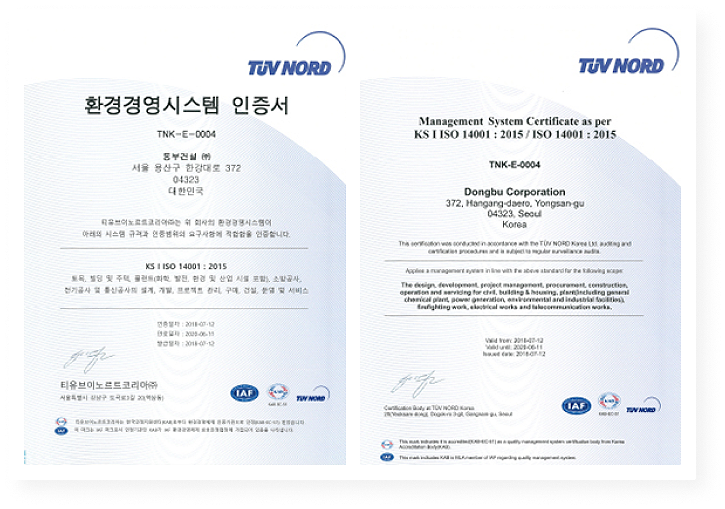
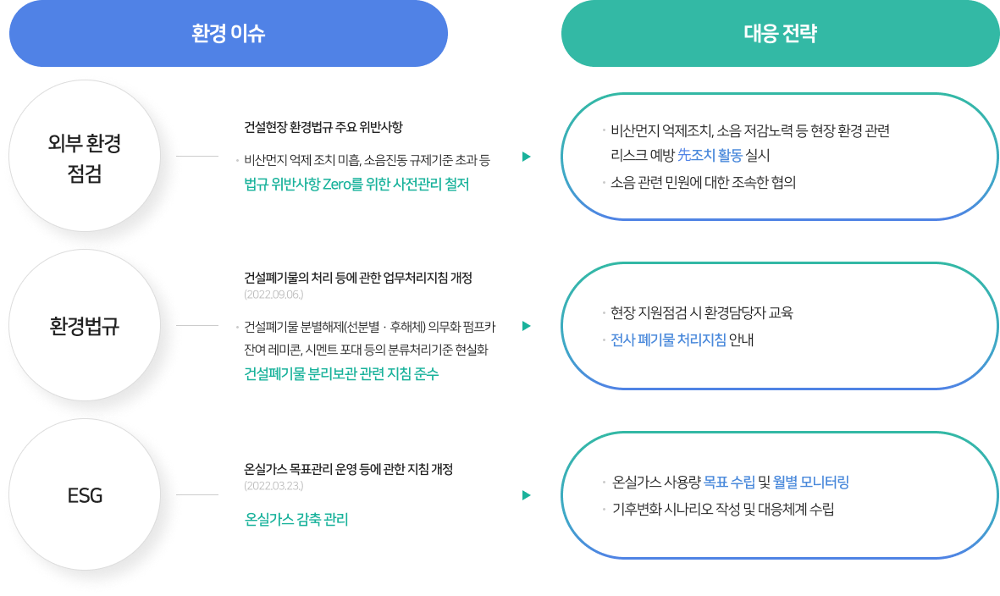
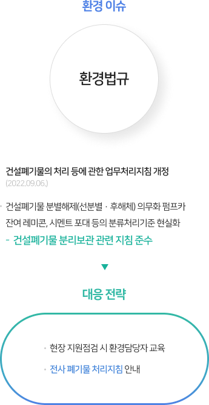
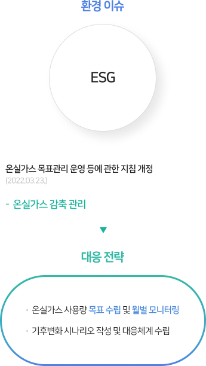
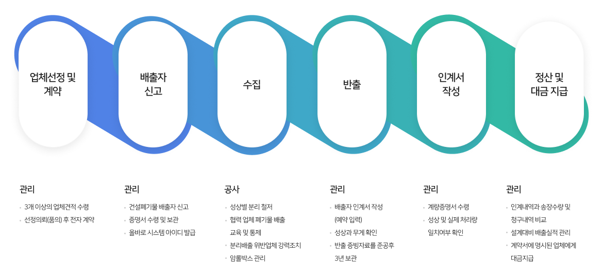
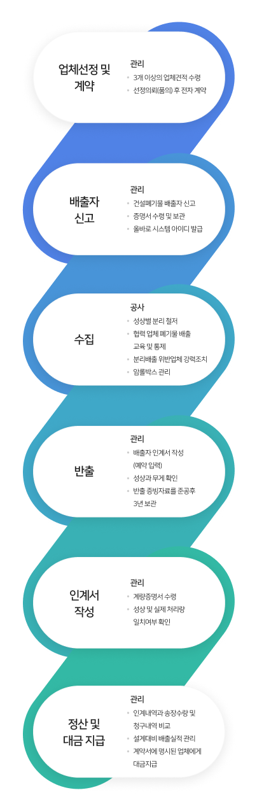

지속가능경영
Environmental

- 환경경영방침
-
동부건설은 고객에게 감동을, 주주에게 이익과 만족을 주는, '사회적 책임을 다하는 명품 기업'으로,
대한민국을 대표하는 지속가능한 종합건설기업을 만들기 위하여 다음과 같이 환경경영을 실천한다.- 환경을 아끼며 실천하는 녹색경영을 실천한다.
- 국내・외 환경법규와 제반 규정을 준수한다.
- 사업수행 전과정의 환경리스트를 고려한다.
- 온실가스 감축활동으로 기후변화에 대응한다.
2023.03.22
동부건설 대표이사 윤진오
환경경영목표
- 환경사고 Zero
효과적인 환경관리
환경과 이해관계자를 먼저 생각하는 건설 관리- 01
- 효율적인 업무시스템 구축
- 법적 기준을 준수하는 환경업무 기준 수립
- 지속적인 환경 정보 제공 및 공유
- 환경 커뮤니케이션 활성화
- 02
- 기본 역량 확보 및 전문 역량 강화
- 전 직원의 기본적인 건설 환경 업무 역량 확보
- 현장 환경담당자의 전문 역량 강화
- 본사 담당자의 지원 역량 강화
- 03
- 건설 환경 법규 준수
- 지속적인 환경 교육 실시
- 환경관리 지원 및 점검 강화
- 효율적인 현장 자체 환경 점검 정착
환경경영체계 및
프로세스
- 환경 친화적 사업 수행을 위하여
사전 검토 제도를 운영합니다. -
- 친환경 사업 수행을 위하여 법규와 제반 규정을 반영한 목표관리 제도 운영
- 사업장 여건에 적합한 환경영향 저감 방안을 정하여 시공 계획에 반영
환경 친화적 사업계획 수립
- 환경사고 예방과 환경오염 저감 활동을 수행합니다.
-
- 자체 환경점검 제도 운영으로 환경사고 예방
- 제 3자 점검제도를 활용한 환경관리 적정성 확보 및 개선
- 환경목표 달성을 위한 협력업체 지원 및 상호협력
환경사고 예방
- 신기술 개발 및 체계적인 교육으로
환경경영 역량을 배양합니다. -
- 친환경 신기술/신공법 개발
- 체계적인 환경교육과 훈련을 통한 환경의식 고취 및 환경관리 역량 강화
환경경영 역량강화
동부건설은 친환경 사업 수행을 위하여
다음과 같은 프로세스를 운영하고 있습니다.

- 현장 환경방침 수립
환경리스크 분석 및 예측
제도 검토, 주민 의견 수립

- 구성원 역량 확보를 위한 교육
친환경 운영 기준 준수
비상사태 대비/대응체계 구축

- 환경경영 적정성 측정 확인
외부 환경변화 모니터링
- 부적합 시정 및 재발방지 활동
성과창출을 위한 지속적 개선
환경경영시스템 인증현황
동부건설은 기업활동에 수반되는 모든 환경영향을
최소화 하기 위한 체제를 구축하여
1996년에 ISO 14001 규격을 취득하여
현재까지 유지하고 있습니다.

KS I ISO 14001:2015
- 인증기관
- TUV NORD KOREA Ltd
- 인증서 발행일
-
- 2022.06.12
- 인증서 만료일
-
- 2025.06.11
- 인증범위
-
토목, 빌딩 및 주택, 플랜트(화학, 발전, 환경 및 산업시설 포함),
소방공사, 전기공사 및 통신공사의 설계, 개발, 프로젝트 관리,
구매, 건설, 운영 및 서비스
환경 이슈 대응
동부건설은 지속가능한 녹색건설을 목표로
다양한 환경 이슈에 대하여 대응전략을 수립, 실천하고 있습니다.

- 
- 
-
- 환경 이슈 : 외부 환경 점검
- 건설현장 환경법규 주요 위반사항 : 비산먼지 억제 조치 미흡, 소음진동 규제기준 초과 등 - 법규 위반사항 Zero를 위한 사전관리 철저
- 대응 전략
- 비산먼지 억제조치, 소음 저감노력 등 현장 환경 관련 리스크 예방 先조치 활동 실시
- 소음 관련 민원에 대한 조속한 협의
-
- 환경 이슈 : 환경법규
- 건설폐기물의 처리 등에 관한 업무처리지침 개정(2022.09.06) : 건설폐기물 분별해제(선분별·후해체) 펌프카 잔여 레미콘, 시멘트 포대 등의 분류처리기준 현실화 - 건설폐기물 분리보관 관련 지침 준수
- 대응 전략
- 현장 지원점검 시 환경담당자 교육
- 전사 폐기물 처리지침 안내
-
- 환경 이슈 : ESG
- 온실가스 목표관리 운영 등에 관한 지침 개정(2022.03.23.) : 온실가스 감축 관리
- 대응 전략
- 온실가스 사용량 목표 수립 및 월별 모니터링
- 기후변화 시나리오 작성 및 대응체계 수립
건설 폐기물 업무처리 흐름도


- 업체신청 및 계약 : 관리 - 3개 이상의 업체견적 수령, 선정 의뢰(품의) 후 전자 계약
- 배출자 신고 : 관리 - 건설 폐기물 배출자 신고, 증명서 수령 및 보관 올바른 시스템 아이디 발급
- 수집 : 공사 - 성상별 분리 철저, 협력 업체 폐기물 배출 교육 및 통제, 분리배출 위반 업체 강력조치, 암롤박스 관리
- 반출 : 관리 - 배출자 인계서 작성 (예약 입력) 성상과 무게 확인, 반출 증빙자료를 준공후 3년 보관
- 인계서 작성 : 관리 - 계량증명서 수령, 성상 및 실제 처리량 일치여부 확인
- 정산 및 대금 지급 : 관리 - 인계내역과 송장수량 및 청구내역 비교, 설계대비 배출실적 관리, 계약서에 명시된 업체에게 대금지급